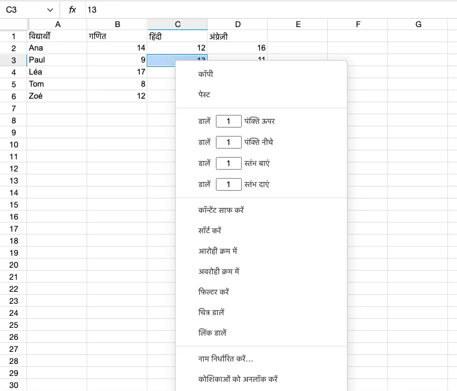

पंक्तियाँ और कॉलम
आकार
| क्रिया | परिणाम |
|---|---|
| कॉलम शीर्षक का दायाँ किनारा खींचना | चौड़ाई बदलता है |
| पंक्ति शीर्षक का निचला किनारा खींचना | ऊँचाई बदलता है |
| शीर्षक पर दायाँ क्लिक › चौड़ाई, ऊंचाई | सभी चुने कॉलमों या पंक्तियों के लिए पिक्सेल में आकार |
जोड़ना, हटाना
सेल या शीर्षक पर दायाँ क्लिक: डालें 1 पंक्ति ऊपर, डालें 1 पंक्ति नीचे, डालें 1 स्तंभ बाएं, डालें 1 स्तंभ दाएं। संख्या फ़ील्ड में लिखें। शीर्षक पर दायाँ क्लिक: चयनित हटाएं पंक्ति, चयनित हटाएं स्तंभ।

सूत्र समायोजित होते हैं: उनके संदर्भ खिसके सेलों के साथ चलते हैं। सीमा 10,000 पंक्तियाँ और 1,000 कॉलम है।
छिपाना
शीर्षक पर दायाँ क्लिक › चयनित छुपाएं पंक्ति, चयनित छुपाएं स्तंभ। छिपे सेल गिने जाते रहते हैं। फिर दिखाने के लिए उनके आसपास के शीर्षक चुनें, फिर दायाँ क्लिक › छुपाए हुए दिखाएं।
फ्रीज़
फ्रीज़ पंक्तियाँ और कॉलम स्क्रॉल करते समय दिखते रहते हैं। सीमा का सेल चुनें, फिर या दृश्य › फ्रीज़ करें:
| आदेश | दिखते रहते हैं |
|---|---|
| वर्तमान पंक्ति तक फ्रीज़ करें | उस सेल की पंक्ति सहित ऊपर की पंक्तियाँ |
| वर्तमान कॉलम तक फ्रीज़ करें | उस सेल के कॉलम सहित बाईं ओर के कॉलम |
| वर्तमान सेल तक फ्रीज़ करें | दोनों |
| फ्रीज़िंग रद्द करें | कुछ विशेष नहीं |
शीर्षक पंक्ति रखने के लिए: पंक्ति 1 के सेल पर क्लिक, वर्तमान पंक्ति तक फ्रीज़ करें।